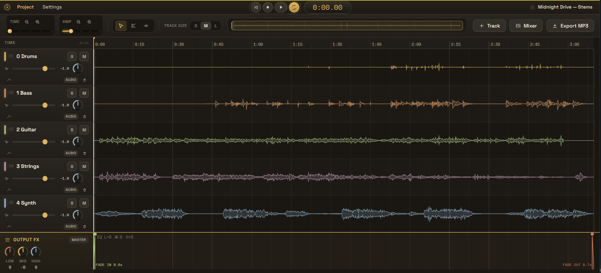
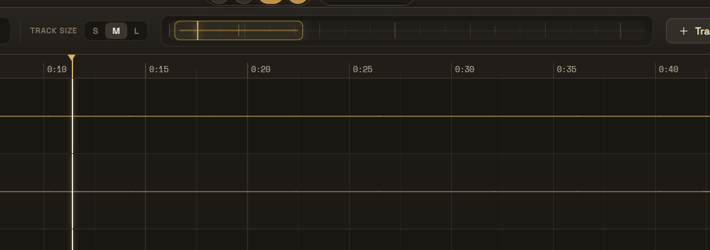
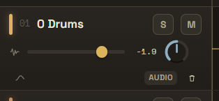
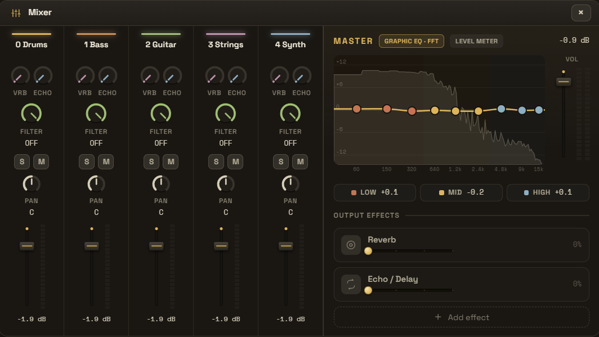
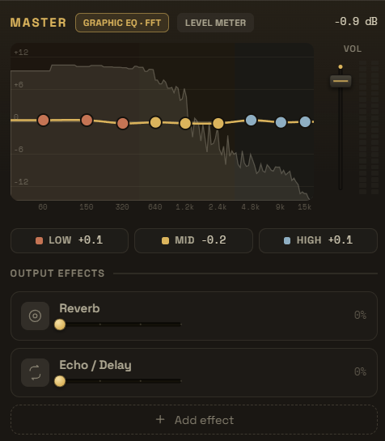
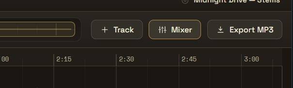

1. 소개
FocusDAW는 Stem(드럼, 베이스, 키보드, 보컬 등) 파일들을 불러와 구간 편집, 볼륨 오토메이션, 이펙트 적용 후 MP3/WAV로 믹스다운하는 경량 DAW입니다.

3. Timeline Minimap 사용법
전체 곡을 한눈에 볼 수 있는 미니맵입니다.
- 클릭/드래그 → 해당 위치로 빠르게 이동
- 휠 스크롤 → TIME 줌 In/Out
- 노란색 브라켓 → 현재 화면에 보이는 영역 표시
- 세로 플레이바 → 현재 재생 위치

4. 각 Track 기능 상세

Track Header (좌측)
- Solo (S) — 해당 트랙만 듣기
- Mute (M) — 해당 트랙 음소거
- Volume Fader — 트랙 볼륨 조절
- Pan Knob — 좌우 팬닝
- VU Meter — 실시간 레벨 표시
- VOL AUTO — Volume Automation On/Off
- Trash — 트랙 삭제
Track Lane (타임라인)
- Scissors (C) — 클릭으로 클립 분할
- Join (J) — 인접 클립 병합
- Automation — 파형 위에서 포인트 드래그, 클릭 추가, 우클릭 삭제
5. Mixer 창


Mixer 버튼 클릭 → 드래그 가능한 별도 창이 열립니다.

6. Output Effect Track
하단 전용 트랙에서 Master EQ, Fade In/Out을 조절할 수 있습니다.
7. Export MP3
Export 버튼 → 파일명, MP3/WAV, Bitrate 등을 선택 후 렌더링
8. 단축키
| 키 | 기능 |
|---|
| Space | Play / Pause |
| S / C / J | Select / Scissors / Join |
| ⌘S | Save Project |
| ⌘O | Open Project |
| ⌘E | Export MP3 |